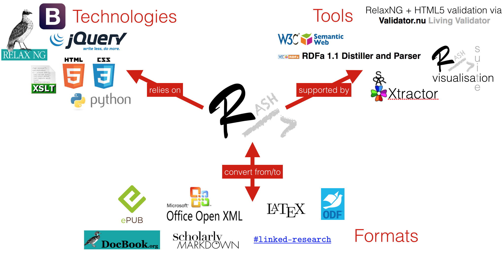

Purpose: this paper introduces the RASH Framework, i.e., a set of specifications and tools for writing academic articles in RASH (a simplified version of HTML).
Design: RASH has been developed in order to: be easy to learn and use; share scholarly documents (and embedded semantic annotations) through the Web; support its adoption within the publishing workflow.
Findings: RASH has been used for papers submitted to the SAVE-SD 2015 workshop. The authors of papers were able to self-learn it by simply referring to its documentation page without facing particular issues. The conversion of the RASH submissions into the format requested by the publisher was handled by the workshop organisers quickly through a semi-automatic process.
Research limitations: additional tools are needed, e.g., for extracting additional RDF statements from RASH documents and to enable additional conversion from/to existing formats.
Practical implications: the RASH Framework is another step towards enabling the definition of formal representations of the meaning of the content of an article, facilitate its automatic discovery, enable its linking to semantically related articles, provide access to data within the article in actionable form, and allow integration of data between papers.
Social implications: RASH addresses the intrinsic needs related to the various users of a scholarly article: researchers (focussing on its content), readers (experiencing new ways for browsing it), citizen scientists (reusing available data formally defined within it through semantic annotations), publishers (using the advantages of new technologies as envisioned by the Semantic Publishing movement).
Value: RASH focuses strictly on writing the content of the paper (i.e., organisation of text + semantic annotations) and leaves all the issues about their validation, visualisation, conversion, and semantic data extraction to the various tools developed within the framework.
In the last months, several posts within technical mailing lists of the Web and Semantic Web community have discussed an evergreen topic in scholarly communication, i.e., the possibility of authors of research papers to submit their works in HTML format instead of others (e.g., PDF, DOC, LaTeX). As a clear consequence, the adoption of HTML in this context would ease the possibility of embedding semantic annotation within articles through existing W3C standards such as RDFa and Turtle , thus making a step towards the improvement of the future of research communications .
The availability of a new format for expressing scientific articles compliant with existing Web technologies, e.g., HTML and RDF, is a necessary step towards the complex (and exciting) scenarios that the Semantic Publishing has promised us . However, the proposal of such new format should be also compliant with intrinsic needs related to the actual users of a scholarly article: researchers, readers, citizen scientists, publishers, institutions.
First of all, the format should be simple to learn and use. In particular, it must focus on organising the content only and should not oblige authors to worry about the way such content will be presented on screen and print. To this end, the number of possible (markup) elements to use should be reduced down to the bare minimum, and the elements themselves must be chosen in order to decrease the cognitive effort of authors when writing documents. For instance, the choice of HTML elements that are quite standard in both HTML4 and HTML5 specifications would allow authors that have used HTML in the past not to learn new elements.
However, if our intent is to work towards a broader adoption of the format, we cannot continue to ask authors to write their articles using text editors. It is a real demand of such format to be supported by appropriate tools, e.g., word processors, that allow the authors to prepare their articles in an easy way. Hence, a consequence of keeping the format as simple as possible, the conversion from word processors formats (e.g., ODT and OOXML ) will be facilitated, particularly when the authors will use only basic features of word processors, i.e., standard styles for paragraphs, headings, tables (headers and common cells), and the like. In particular, as for the format, the authors should not care about the presentational layer of the word processors, since it will be handled automatically by means of appropriate tools after the conversion into the new format. This approach would allow authors to use well-known and easy-to-use WYSIWYG editors for writing the content of a paper, adding notes to it, keeping track of the changes of the content through the appropriate word-processor tools, and finally to convert it into the new format when the document content is actually finalised.
Developing a format that is fully HTML-based would allow an immediate sharing of authors' works within the Web. As quickly introduced above, this choice (together with the intrinsic simplicity of the format) would enable easy conversions from/into different document oriented formats in a quite straightforward way, e.g., ODT , OOXML , DocBook , JATS . The possibility of sharing and modifying documents in such new format between a group of people (e.g., co-authors) would be then guaranteed even if they are not using the same word-processor for writing the article content.
Another important point that the new format should address is to help publishers in processing articles submitted in such new format. Of course publishers, conference and workshop organisers, and even authors (e.g., in the case of a publication to CEUR-WS.org) would like to manage formats that they have already introduced in their publishing process, such as LaTeX. To this end, the new format should guarantee the possibility of developing tools for its conversion into specific layout requirements, such as ACM ICPS and Springer LNCS.
Finally, the new format should be developed for enabling the easy definition and the (semi-)automatic extraction of semantic scholarly data (e.g., RDF statements according to specific ontologies such as SPAR Ontologies ). This characteristic is in line with the past works, the research guidelines and suggested by the Semantic Publishing movement , i.e., the use of Web and Semantic Web technologies to enhance a published document such as a journal article so as to enable the definition of formal representations of its meaning, facilitate its automatic discovery, enable its linking to semantically related articles, provide access to data within the article in actionable form, and allow integration of data between papers
.
In order to address all the aforementioned issues, in this paper we introduce the RASH Framework, i.e., a set of specifications and tools for writing academic articles in RASH, i.e., a markup language defined as a subset of 25 HTML elements for writing scientific articles. In particular, RASH focuses strictly on writing the content of the paper (i.e., organisation of text + semantic annotations), handling all the issues about validation/presentation/conversion of RASH documents to the various scripts and stylesheets developed within the framework.
The rest of the paper is structured as follows. In we introduce the rationale for the creation of a new HTML-based format for scholarly publication. In we introduce the RASH Framework, providing a quick overview of all its components, while in , as a case study, we discuss the use of RASH as one of the formats for submitting papers to the SAVE-SD 2015 workshop. In we discuss some of the most relevant related works. Finally, in we conclude the paper sketching out some future developments.
Some works, e.g., Capadisli et al. , suggest not to force any particular HTML structure for research papers. This choice would allow authors to use whatever HTML structure they want for writing papers, and would reduce (even, eliminate) the fear for the template bottleneck, i.e., the fact that users will not adopt a particular language because they would be obliged to follow specific rules. However, leaving the user (i.e., the author) the freedom of using, potentially, the whole HTML specification may affect, in some way, the whole writing and publishing process of articles.
First of all, the author of a paper is free to use any possible kinds of HTML linearisations for her scholarly text, e.g.: using elements div instead of elements section, using elements table for presentational behaviour and not for presenting tabular data, and the like. This freedom could, thus, result in two main kinds of issues:
visualisation bottleneck – it may affect the correct use of existing, well-developed and pretty standard CSSs (e.g., Capadisli's CSSs developed in the context of the Linked Research project) for both screen and print media, resulting in writing new code for handling paper visualisation correctly;
less focus on the research content – the fact that a certain paper is not visualised in a browser very well (or, worse, in a way that is not the one the author expects) could bring the author to work on the presentation of the text, rather than on focussing on the actual research context of the text.
Another point against the use of any HTML syntax for writing papers concerns the possibility of enabling an easy way for sharing the paper to others (e.g., co-authors) who, potentially, may not be able to use HTML. Having a simple and acceptable (HTML-based) format would facilitate conversions from/into other complex ones (e.g., ODT , OOXML , DocBook , JATS ), thus enabling the other co-authors to use their own text editors or word-processors to modify the document. On the other hand, if all the co-authors of a paper are able to use (totally or in part) HTML, they may not understand other users' specific uses of some HTML tags — why did she use the elements section instead of div?
; what is this freaky use of elements table?
. Hence, the advantages of using a common HTML format is quite evident: only one syntax and only one possible semantics (as defined by the language).
To complicate an already complex scenario is the necessary involvement of publishers. Leaving the authors of using their own HTML format could be also counterproductive from a publisher's perspective, in particular when we speak about the possibility of adopting such HTML formats for regular conference/journal camera ready submissions. From a recent discussion on the Force11 mailing list, it appears clear that publishers are willing to adopt HTML for submissions if and only if it is a clear community need. It means that they will include HTML formats in the publishing workflow only once a number of conference organisers decide to deliver HTML as camera ready versions of accepted papers. However, using one clear HTML-based format, rather than a plethora of possible variations allowed by the full HTML schema, would certainly decrease the effort of publishers for including HTML within the publishing workflow. This inclusion could be additionally supported by the community itself if it would be made available a series of services (e.g., converters, enhancers, visualisers) for facilitating the use of such HTML-based format within the existing publishing environment.
Finally another point related to the next step of the scholarly publishing revolution, i.e., Semantic Publishing , is an important aspect to take into consideration in the discourse. The development of scripts and applications to extract, for instance, RDF statements directly from the markup structure of the text is a sort of nightmare if different authors use HTML in different manners. For instance, what happen if we would like to extract the rhetorical organisation of a scientific paper according to the Document Component Ontology (DoCO) from two HTML documents that use HTML tags in different ways? Is an HTML element table an actual table (containing tabular data)? What are the tags identifying sections? What are the elements used for identifying citations? Where do they happen (e.g., in which sentences)?
In addition to all the aforementioned points against the use of any generic HTML document, we should also consider the following additional, and crucial, issues:
not all the potential authors are able (or willing) to write scholarly articles in HTML, even considering those people within the Web community;
not all the potential authors are able (or willing) to add additional semantic annotations (e.g., through RDFa , even considering the Semantic Web community.
Thus, the authorial activity of writing an article by using this new HTML-based format must be supported by appropriate interfaces to reach a broad adoption.
The RASH Framework is a set of specifications and writing/conversion/extraction tools for writing academic articles in RASH, i.e., a markup language defined as a subset of HTML for writing scientific articles. In this section we introduce RASH and all the tools we have developed in order to address the requirements introduced in and . All the software components of the RASH Framework are distributed under an ISC License, while the other components are distributed under a Creative Commons Attribution 4.0 International License. A summary of the whole framework is introduced in .

The RASH Framework and its components – some of them, such as conversions tool into DocBook, ePub, and OOXML, are under-development.
The Research Articles in Simplified HTML (RASH) format is a markup language that restricts the use of HTML elements to only 25 elements for writing academic research articles. It allows authors to use RDFa annotations within any element of the language. In addition to RDFa, RASH makes available another way to add RDF statements to the document, i.e., the use of an element script (with the attribute type set to text/turtle
or to application/json+ld
) within the element head for adding plain Turtle or JSON-LD content .
Concerning its theoretical foundations, RASH is entirely based on a strong theory on structural patterns for XML documents . The systematic use of these structural patterns is an added value in all stages of the documents' lifecycle: they can be guidelines for creating well-engineered documents and vocabularies, rules to extract structural components from legacy documents, indicators to study to what extent documents share design principles and community guidelines. All these characteristics have allowed us to simplify, at least to some extent, the handling of all the requirements introduced in and in RASH.
Any RASH documents begins as a simple (X)HTML5 document, by specifying the generic HTML DOCTYPE followed by the document element html with the usual namespace (i.e, http://www.w3.org/1999/xhtml
) and with additional (and mandatory) prefix declarations through the attribute prefix. The element html contains the element head for defining metadata of the document according to the DCTERMS and PRISM standards, and the element body for including the whole content of the document. On the one hand, the element head of a RASH document must/should include some information about the paper, i.e., the paper title (element title), at least one author and other related information (i.e., affiliations, keywords, categories, by using the elements meta and link). On the other hand, the element body mainly contains textual elements (e.g., paragraphs, emphases, links, and quotations) for describing the content of the paper, and other structural elements (e.g., abstract, sections, references, and footnotes) used to organised the paper in appropriate blocks and to present specific complex structures (e.g., figures, formulas, and tables).
RASH has been developed as a RelaxNG grammar, i.e., a well-known schema language for XML documents. All the markup items it defines are fully compatible with both the HTML5 specifications , but they are back-compatible with HTML4 as well, in order to maximise the reuse of RASH also in environments that are not able to handle the earliest version of HTML.
In order to check whether a document is compliant with RASH, we have developed a script to enable RASH users to check their documents simultaneously both against the specific requirements in the RASH RelaxNG grammar and also against the full set of HTML checks that the W3C Nu HTML Checker (a.k.a., HTML5 validator) does for all HTML documents (by checking all requirements given in the HTML specification). This ensures that RASH users get alerted to more potential mistakes in their documents so that they can easily fix them. Among other things above just using the RASH grammar only, this script adds relatively sophisticated checking of the datatype microsyntaxes of attribute values.
The whole visualisation of this document (as any other RASH document) is rendered by the browser in the current form by means of appropriate CSS3 stylesheets and javascript scripts developed for this purpose.
We are actually using some external libraries, i.e., Bootstrap and JQuery, in order to guarantee the current clear visualisation and for adding additional tools to the user – such as the footbar with statistics about the paper (i.e., number of words, figures, tables and formulas) and a menu to change the actual layout of the page, the automatic reordering of footnotes and references, the visualisation of the metadata of the paper, etc.
We have spent some effort in preparing XSLT 2.0 documents for converting RASH documents into different LaTeX styles, such as ACM ICPS and Springer LNCS, among the others. This is, actually, one of the crucial step to guarantee the use of RASH within international events (cf. ) and to be able to publish RASH documents in the official LaTeX format as required by the organisation committee of such events. In addition, we have already developed another XSLT 2.0 document to perform conversions from OpenOffice documents into RASH documents, which allows us to write a paper through the OpenOffice editor and then converting the related ODT file into RASH automatically.
In the past few years, as sort of alpha-testing, we have used these conversion approaches with an internal project in the Web Technologies Laboratory of the Department of Computer Science and Engineering at the University of Bologna. In particular, we have been able to convert several ODT files of the main part of the research papers and two Ph.D. thesis we wrote in our group into RASH, with a discrete success.
A recent development of the RASH Framework has concerned the automatic enrichment of RASH documents with RDFa annotations defining the actual structure of such documents in terms of the Document Component Ontology (DoCO) . In particular, a Java application called SPAR Xtractor suite has been developed: it takes a RASH document as input and returns a new RASH document where all its markup elements have been annotated with their actual (structural) semantics. For instance, elements p will be associated to the class doco:Paragraph, elements div with the attribute class set to picture
will be associated to doco:FigureBox, and so on.
In addition to these semantic assertions, currently the tool is also able to identify all the sentences within the various paragraphs (by adding an element span around each sentence). This identification is performed by means of the sentence detector of the Apache OpenNLP project.
The true validation for RASH as a format for research papers rests on its use by a good number of authors when writing papers for journals, conferences and workshops. For this reason, RASH was first released in conjunction with the Semantics, Analytics, Visualisation: Enhancing Scholarly Data
(SAVE-SD 2015) workshop, co-located with WWW 2015. This workshop was organized with the aim of bringing together publishers, companies and researchers in order to bridge the gap between the theoretical/academic and practical/industrial aspects in regards to scholarly data. Hence, it drew a variety of researchers from a number of complementary fields, such as Document and Knowledge Engineering, Semantic Web, Natural Language Processing, Scholarly Communication, Bibliometrics, and Human-Computer Interaction.
SAVE-SD 2015 allowed authors to submit papers using either RASH or PDF, and explicitly encouraged authors to try the new format. An award for the best submission in RASH has been introduced by the organisers of the workshop with the hope of increasing the number of submissions in RASH. The possibility of submitting in RASH was advertised on social media (e.g., Twitter, Facebook) and during various international events (e.g., DL 2014, EKAW 2014, FORCE 2015).
The initiative had a substantial success: the workshop received 6 out of 23 submissions in RASH and after the review process an additional author chose to prepare the camera ready in RASH. Out of these 7 final submissions, 3 were research papers, 1 was a position paper, and 3 posters/demo. These papers were submitted by 16 authors from Switzerland, Italy, Germany, Netherlands, United Kingdom, Ireland, and USA. Interestingly, all RASH papers were appreciated by the reviewers and enjoyed a perfect acceptance rate. In fact, 4 out of the 8 accepted papers for the main track of the workshop were in RASH.
At the time of the workshop submission deadline, there were no public tools available for converting other formats into RASH. However, the authors were able to self-learn it by simply referring to the documentation page, confirming that computer scientists have no particular problem in handling it directly. The conversion of the RASH submissions into the ACM format requested by Sheridan publisher (responsible for the publications of all WWW proceedings) was handled by the organisers through a semi-automatic process. In particular, they used the XLST files introduced in and then they fixed only a few of layout misalignments.
SAVE-SD 2015 confirmed that RASH is a format that can already be adopted by workshops, conferences and journals with minimal effort and can be quickly learnt by researchers who are familiar with HTML. All the papers submitted in RASH discussed ideas and technologies originated in the Semantic Web and Open Access communities. Hence, the first adopters were familiar with the concept of semantic annotations and understood well the potentiality of RASH for making their work more accessible. We now look forward to further discussing RASH with the attendees of the SAVE-SD 2015 workshop and to show the personal and public advantages of this solution also to researchers who are less accustomed to these topics, hoping that the positive result obtained with SAVE-SD 2015 will inspire other venues to experiment with this format.
In this paper we have introduced the RASH Framework, i.e., a set of specifications and tools for writing academic articles in RASH, i.e., a markup language defined as a subset HTML for writing scientific articles. In particular, we have discussed the rationale behind the development of RASH, and we have presented the language with all the validation/visualisation/conversion/extraction tools we have developed so far.
As immediate future development, we plan to develop scripts for extracting RDF statements from RASH documents according to SPAR Ontologies , such as the Citation Typing Ontology (CiTO) and the Document Component Ontology (DoCO). From the validation point of view, we plan to convert the current existing script for validating RASH documents into Python so as to allow users using different systems to run the validation of RASH documents easily. Finally, we are currently develop additional XSLT documents in order to convert DOCX documents into RASH and to convert RASH documents into several different LaTeX formats for scholarly communications, such as Springer LNCS, IEEE, ACM journals.
We would like to thank Sarven Capadisli for our inspiring discussions on the topic, and all the twitter users and the authors of the accepted papers of the SAVE-SD 2015 workshop for having provided us useful suggestions and insights for improving RASH and the related tools.
Hickson, I., Berjon, R., Faulkner, S., Leithead, T., Doyle Navara, E., O'Connor, E., & Pfeiffer, S. (2014). HTML5: A vocabulary and associated APIs for HTML and XHTML. W3C Recommendation, 28 October 2014. World Wide Web Consortium. http://www.w3.org/TR/html5/
Raggett, D., Le Hors, A., & Jacobs, I. (1999). HTML 4.01 Specification. W3C Recommendation, 24 December 1999. World Wide Web Consortium. http://www.w3.org/TR/html401/
JTC1/SC34 WG 4. (2011). ISO/IEC 29500-1:2011 - Information technology - Document description and processing languages - Office Open XML File Formats - Part 1: Fundamentals and Markup Language Reference. Geneva, Switzerland: International Organization for Standardization. http://www.iso.org/iso/iso_catalogue/catalogue_tc/catalogue_detail.htm?csnumber=59575
JTC1/SC34 WG 6. (2006). ISO/IEC 26300:2006 - Information technology - Open Document Format for Office Applications (OpenDocument) v1.0. Geneva, Switzerland: International Organization for Standardization. http://www.iso.org/iso/iso_catalogue/catalogue_tc/catalogue_detail.htm?csnumber=43485
National Information Standards Organization. (2012). JATS: Journal Article Tag Suite. American National Standard No. ANSI/NISO Z39.96-2012, 9 August 2012. http://www.niso.org/apps/group_public/download.php/10591/z39.96-2012.pdf
Walsh, N. (2009). The DocBook Schema Version 5.0. OASIS Standard, 1 November 2009. Burlington, Massachusetts, US: Organization for the Advancement of Structured Information Standards. http://docs.oasis-open.org/docbook/specs/docbook-5.0-spec-os.html
Peroni, S. (2014). The Semantic Publishing and Referencing Ontologies. In Semantic Web Technologies and Legal Scholarly Publishing, Law, Governance and Technology Series 15: 121–193. Cham, Switzerland: Springer. http://dx.doi.org/10.1007/978-3-319-04777-5_5
Shotton, D., Portwin, K., Klyne, G., & Miles, A. (2009). Adventures in Semantic Publishing: Exemplar Semantic Enhancements of a Research Article. PLoS Computational Biology, 5(4): e1000361. http://dx.doi.org/10.1371/journal.pcbi.1000361
Pettifer, S., McDermott, P., Marsh, J., Thorne, D., Villeger, A., & Attwood, T. K. (2011). Ceci n'est pas un hamburger: modelling and representing the scholarly article. Learned Publishing, 24(3): 207–220. http://dx.doi.org/10.1087/20110309
Peroni, S. (2014). The digital publishing revolution. In Semantic Web Technologies and Legal Scholarly Publishing, Law, Governance and Technology Series 15: 7–43. Cham, Switzerland: Springer. http://dx.doi.org/10.1007/978-3-319-04777-5_2
Sporny, M. (2013). HTML+RDFa 1.1: Support for RDFa in HTML4 and HTML5. W3C Recommendation, 22 August 2013. World Wide Web Consortium. http://www.w3.org/TR/rdfa-in-html/
Di Iorio, A., Peroni, S., Poggi, F., & Vitali, F. (2014). Dealing with structural patterns of XML documents. Journal of the American Society for Information Science and Technology, 65(9): 1884–1900. http://dx.doi.org/10.1002/asi.23088
Prud'hommeaux, E., & Carothers, G. (2014). Turtle - Terse RDF Triple Language. W3C Recommendation, 25 February 2014. World Wide Web Consortium. http://www.w3.org/TR/turtle/
Kay, M. (2007). XSL Transformations (XSLT) Version 2.0. W3C Recommendation, 23 January 2007. World Wide Web Consortium. http://www.w3.org/TR/xslt20/
Constantin, A., Peroni, S., Pettifer, S., Shotton, D., & Vitali, F. (in press). The Document Component Ontology (DoCO). To appear in Semantic Web – Interoperability, Usability, Applicability. OA version available at http://www.semantic-web-journal.net/system/files/swj1016.pdf
Bourne, P. E., Clark, T., Dale, R., de Waard, A., Herman, I., Hovy, E. H., & Shotton, D. (2011). FORCE11 White Paper: Improving The Future of Research Communications and e-Scholarship. White paper, 28 October 2011. FORCE11. https://www.force11.org/white_paper
Capadisli, S., Riedl, R., & Auer, S. (2015). Enabling Accessible Knowledge. In Proceedings of the 2015 International Conference for E-Democracy and Open Government (CeDEM 2015). Krems, Austria: Universität Krems. OA version available at http://linked-research.270a.info/index.html
Lin, T. T. Y., & Beales, G. (2015). ScholarlyMarkdown Syntax Guide. Guide, 31 January 2015. http://scholarlymarkdown.com/Scholarly-Markdown-Guide.html
Sporny, M., Kellogg, G., & Lanthaler, M. (2014). JSON-LD 1.0 - A JSON-based Serialization for Linked Data. W3C Recommendation, 16 January 2014. World Wide Web Consortium. http://www.w3.org/TR/json-ld/
The full project is available at https://github.com/essepuntato/rash/. Please use the hashtag #rashfwk for referring to any of the items defined in the RASH Framework via Twitter or other social platforms.
Technically speaking, this is a meta-article, since it has been actually written by using RASH itself as markup language. Thus it is possible to easily access the HTML code of this article to understand how the various elements are rendered by the browser.
The following prefixes are always mandatory in any RASH document:
schema: http://schema.org/
prism: http://prismstandard.org/namespaces/basic/2.0/
Please refer to the official RASH documentation, available at http://cs.unibo.it/save-sd/rash, for a complete introduction of all the elements and attributes that can be used in RASH documents.
The layouts currently available are Web-based and Springer's Lecture Note in Computer Science.
Note that accepting HTML as format for submissions in conferences/workshops is a totally different issue, since this choice is normally taken by the organisers. For instance, see the SAVE-SD 2015 call for papers and the various editions of SePublica.